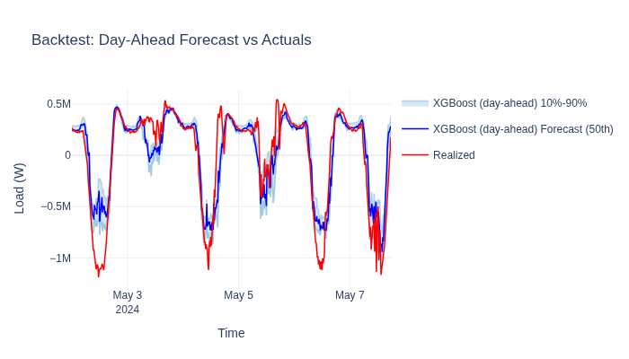

Backtesting Quickstart#
Backtesting simulates how a forecasting model would have performed in a real operational setting. Unlike a simple train/test split, it respects temporal constraints: models are retrained on a schedule and predictions use only data that would have been available at prediction time.
What you will learn:
How to set up a backtesting pipeline with
BacktestPipelineHow to configure prediction and retraining schedules
How to evaluate backtest results with standardized metrics
Note
This tutorial shows the low-level backtesting API step by step.
For production use, the benchmark framework (openstef_beam.benchmarking)
wraps all of this into a single pipeline call — see
examples/benchmarks/ for ready-to-run examples.
Key API references:
BacktestPipeline
· BacktestConfig
· BacktestForecasterConfig
· EvaluationConfig
How backtesting works#
A backtesting pipeline replays history as if it were happening in real-time:
Event generation — the pipeline creates a schedule of prediction and retraining events based on configured intervals.
Training — at each retraining event, the model is fitted on all data available up to that point (no lookahead).
Prediction — at each prediction event, the model generates a forecast using only data published before that moment.
Collection — all forecasts are gathered into a single dataset for evaluation against ground truth.
Load the versioned dataset#
Backtesting requires versioned data — each data point carries an
available_at timestamp indicating when it became known. This prevents
the model from accidentally using future information.
VersionedTimeSeriesDataset
provides this out of the box.
from pathlib import Path
from openstef_core.datasets import VersionedTimeSeriesDataset
from openstef_core.testing import load_liander_dataset
# Download the dataset from HuggingFace (cached after first run)
data_dir = Path("liander_dataset")
load_liander_dataset(local_dir=data_dir)
# Ground truth: actual load measurements
ground_truth = VersionedTimeSeriesDataset.read_parquet(
data_dir / "load_measurements" / "mv_feeder" / "OS Gorredijk.parquet"
)
# Predictors: versioned weather forecasts (available_at < forecast time)
predictors = VersionedTimeSeriesDataset.read_parquet(
data_dir / "weather_forecasts_versioned" / "mv_feeder" / "OS Gorredijk.parquet"
)
print(f"Ground truth: {len(ground_truth.index):,} timestamps, {len(ground_truth.feature_names)} features")
print(f"Predictors: {len(predictors.index):,} timestamps, {len(predictors.feature_names)} features")
Ground truth: 35,136 timestamps, 1 features
Predictors: 35,229 timestamps, 11 features
Configure the forecaster#
We wrap a standard ForecastingWorkflowConfig in an
OpenSTEF4BacktestForecaster which implements the backtesting interface
(fit/predict with temporal constraints).
from datetime import timedelta
from openstef_beam.backtesting.backtest_forecaster import BacktestForecasterConfig
from openstef_beam.benchmarking.baselines.openstef4 import OpenSTEF4BacktestForecaster
from openstef_core.types import LeadTime, Q
from openstef_models.presets import ForecastingWorkflowConfig, create_forecasting_workflow
workflow_config = ForecastingWorkflowConfig(
model_id="backtest_demo",
model="xgboost",
horizons=[LeadTime.from_string("PT48H")],
quantiles=[Q(0.5), Q(0.1), Q(0.9)],
target_column="load",
temperature_column="temperature_2m",
relative_humidity_column="relative_humidity_2m",
wind_speed_column="wind_speed_10m",
radiation_column="shortwave_radiation",
pressure_column="surface_pressure",
mlflow_storage=None,
verbosity=0,
)
backtest_forecaster_config = BacktestForecasterConfig(
requires_training=True,
predict_length=timedelta(hours=48),
predict_min_length=timedelta(minutes=15),
predict_context_length=timedelta(days=14),
predict_context_min_coverage=0.5,
training_context_length=timedelta(days=90),
training_context_min_coverage=0.5,
)
workflow = create_forecasting_workflow(workflow_config)
forecaster = OpenSTEF4BacktestForecaster(
config=backtest_forecaster_config,
workflow_template=workflow,
cache_dir=Path("cache/backtest_demo"),
)
print(f"Model: {workflow_config.model}")
print(f"Training window: {backtest_forecaster_config.training_context_length}")
print(f"Predict horizon: {backtest_forecaster_config.predict_length}")
Model: xgboost
Training window: 90 days, 0:00:00
Predict horizon: 2 days, 0:00:00
Run the backtest#
We configure the pipeline to predict every 6 hours and retrain weekly. The backtest covers a short 5-day window for fast execution.
from datetime import datetime
from openstef_beam.backtesting import BacktestConfig, BacktestPipeline
backtest_config = BacktestConfig(
prediction_sample_interval=timedelta(minutes=15),
predict_interval=timedelta(hours=6),
train_interval=timedelta(days=7),
)
pipeline = BacktestPipeline(config=backtest_config, forecaster=forecaster)
# Short evaluation window: 5 days starting well into the dataset
backtest_start = datetime.fromisoformat("2024-05-01T00:00:00Z")
backtest_end = datetime.fromisoformat("2024-05-06T00:00:00Z")
predictions = pipeline.run(
ground_truth=ground_truth,
predictors=predictors,
start=backtest_start,
end=backtest_end,
)
print(f"Predictions generated: {predictions.data.shape[0]:,} rows")
print(f"Time range: {predictions.data.index.min()} to {predictions.data.index.max()}")
Predictions generated: 3,840 rows
Time range: 2024-05-01 00:00:00+00:00 to 2024-05-07 17:45:00+00:00
Evaluate the results#
The EvaluationPipeline computes metrics over configurable time windows.
It filters predictions by lead time to produce meaningful comparisons
(e.g., day-ahead forecasts only).
We use rMAE (relative Mean Absolute Error) and rCRPS (relative Continuous Ranked Probability Score) — both normalized by mean absolute actuals. See the full list of available metrics. If your scores are suboptimal, Hyperparameter Tuning with Optuna shows how to optimize model parameters before re-running the backtest.
from openstef_beam.evaluation import EvaluationConfig, EvaluationPipeline, Window
from openstef_beam.evaluation.metric_providers import RCRPSProvider, RMAEProvider
evaluation_config = EvaluationConfig(
windows=[Window(lag=timedelta(hours=0), size=timedelta(days=5))],
lead_times=[], # Only use available_at filtering (day-ahead)
)
eval_pipeline = EvaluationPipeline(
config=evaluation_config,
quantiles=workflow_config.quantiles,
window_metric_providers=[
RMAEProvider(quantiles=[Q(0.5)]),
RCRPSProvider(),
],
global_metric_providers=[
RMAEProvider(quantiles=[Q(0.5)]),
RCRPSProvider(),
],
)
report = eval_pipeline.run(
predictions=predictions,
ground_truth=ground_truth,
target_column="load",
)
print("Backtest evaluation metrics (day-ahead):")
for subset_report in report.subset_reports:
print(f"\n Lead-time filter: {subset_report.filtering}")
for metric in subset_report.metrics:
df = metric.to_dataframe()
print(f" Window: {metric.window}")
print(df.to_string(index=False))
Backtest evaluation metrics (day-ahead):
Lead-time filter: D-1T0600
Window: (lag=PT0S,size=P5D,stride=P1D)
quantile rMAE rCRPS
0.5 0.083058 NaN
global NaN 0.066299
Window: global
quantile rMAE observed_probability rCRPS
0.5 0.085668 0.539855 NaN
global NaN NaN 0.067726
0.1 NaN 0.396739 NaN
0.9 NaN 0.757246 NaN
Visualize predictions vs actuals#
The evaluation report contains a properly filtered ForecastDataset for
each lead-time subset. We use this directly for visualization — it
shows only day-ahead predictions aligned with their corresponding actuals.

The easy way: benchmark framework#
The code above demonstrates each backtesting step explicitly. In practice, the benchmark framework handles all of this (data loading, target management, evaluation, analysis) in a single pipeline:
from openstef_beam.benchmarking.benchmarks.liander2024 import (
create_liander2024_benchmark_runner,
)
from openstef_beam.benchmarking.baselines.openstef4 import (
create_openstef4_preset_backtest_forecaster,
)
runner = create_liander2024_benchmark_runner()
forecaster_factory = create_openstef4_preset_backtest_forecaster(workflow_config)
runner.run(forecaster_factory, run_name="my_experiment")
The benchmark runner automatically:
Downloads and manages the dataset
Iterates over all targets (feeders, transformers, solar parks, etc.)
Runs backtests with standardized configuration
Computes metrics and generates analysis visualizations
See examples/benchmarks/ for complete benchmark scripts that will be
converted to Jupytext tutorials in a future update.
Next steps#
Hyperparameter Tuning with Optuna — optimize model parameters, then re-run the backtest to measure improvement.
Ensemble Forecasting — backtest an ensemble of diverse models.